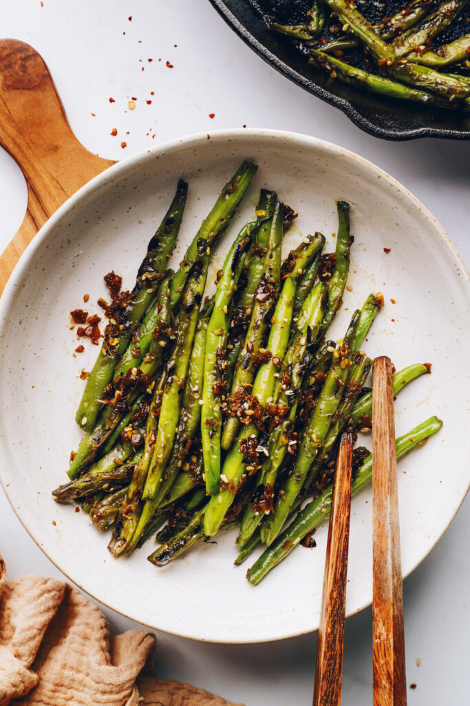

Spicy Stir-Fried Green Beans

Description
The inspiration for these stir-fried green beans comes from the popular chili-garlic green bean appetizer at some Chinese American restaurants. And the inspiration for that dish? It likely came from a Chinese dish called Sichuan (or Szechuan) Dry Fried Green Beans. The following is our inspired version of the Chinese American dish featuring blistered green beans in a savory, spicy sauce.
Ingredients
- 12 oz green beans, ends trimmed
- 1/4 cup vegetable broth
- 2 Tbsp tamari or low-sodium soy sauce
- 1 Tbsp minced fresh ginger
- 1 Tbsp minced garlic
- 1/2 tsp red pepper flakes
- 1 pinch sea salt
- 1/2 tsp maple syrup
- 1 Tbsp avocado oil
Steps
- Wash the green beans and dry thoroughly (to prevent oil from splattering), then trim and discard the ends.
- In a small bowl or liquid measuring cup, combine the broth, tamari, ginger, garlic, red pepper flakes, salt, and maple syrup.
- Heat a large skillet (or wok) over high heat. Once hot (test it by sprinkling some water in — it should sizzle), add the oil and swirl the pan to achieve a thin layer.
- Add the green beans and cook, tossing occasionally, for about 3-4 minutes. The beans will be browned in spots but still crisp. Reduce the heat to medium-high, then quickly add the sauce mixture (it will be steamy). Cook, stirring occasionally, for 3-5 minutes, until the beans are tender with a little crunch (al dente) and the liquid is reduced.
- Serve warm with grains (such as rice, millet, or quinoa) or cauliflower rice and your choice of protein.
- Leftover green beans will keep in a sealed container in the refrigerator for 3-4 days. Not freezer friendly.